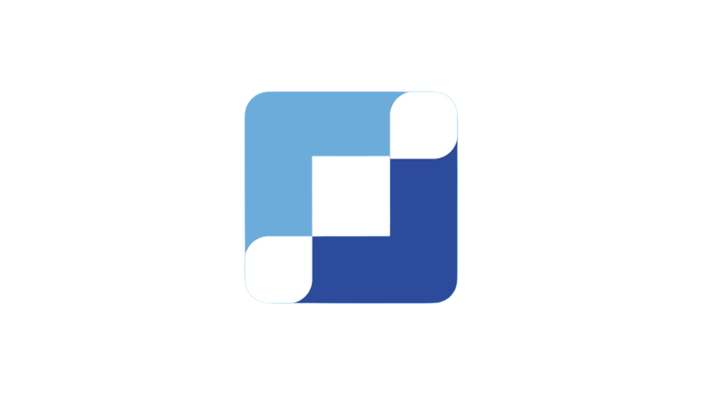

A Tech Journey é o programa da Yandeh para colaboradores que querem evoluir — técnica ou comportamentalmente — com custeio parcial ou total da empresa, aprovação por liderança e P&C, e impacto direto na carreira.

Escolha o formato que melhor encaixa no seu momento, no seu squad e na tecnologia que você quer dominar. Cada modalidade tem seu próprio ritmo e objetivo.
Acesso a trilhas completas em plataformas como Alura, Coursera e Udemy — do back ao DevOps, do front à IA. Aprenda no seu ritmo, com curadoria de conteúdo alinhada ao seu plano de desenvolvimento.
Bootcamps e cursos pontuais com duração até dez/26 para destravar uma stack ou tecnologia específica. Formato intensivo, resultado rápido — ideal para gaps técnicos bem definidos.
QCon, AWS Summit, The Developer's Conference, Google I/O Extended e outros encontros da comunidade tech. Networking real, tendências em primeira mão e conexão com o ecossistema.
AWS, GCP, Azure, Kubernetes (CKA/CKAD), Scrum, HashiCorp e demais certificações reconhecidas no mercado. Invista na credencial que comprova o que você já sabe — e abre o que vem a seguir.
Mentorias, workshops internos, comunidades técnicas e formatos não-tradicionais alinhados ao seu plano. Se o formato importa para o seu crescimento e tem aderência à carreira, vale conversar.
Colaboradores com interesse genuíno em desenvolvimento técnico ou de soft skills, alinhamento com a liderança e perfil aderente aos critérios abaixo.
Avaliamos contexto, momento de carreira e impacto esperado antes de liberar a participação. Não é burocracia — é garantia de que o investimento vai gerar resultado real.
O processo é simples e começa com uma conversa com a sua liderança. Do interesse à aprovação, o caminho tem clareza em cada etapa.
Mapeie a skill ou stack que quer evoluir e selecione o formato ideal — plataforma, curso, evento ou certificação.
Garanta que o desenvolvimento escolhido conversa com os objetivos do time e do squad antes de avançar.
Faça o 'commit' da sua candidatura preenchendo o formulário oficial com o conteúdo escolhido e justificativa.
Avaliação por Diretoria e Pessoas & Cultura antes do go-live. Você recebe retorno com prazo definido.
Cada candidatura é avaliada considerando o conjunto abaixo. Os itens são ponderados em conjunto — não há eliminação automática por um único critério.
| Critério | Requisito | Observação |
|---|---|---|
| Posicionamento 9-box | Pleno ou superior | Avaliado no último ciclo de AVD |
| Temática do curso | Aderente à área / carreira | Deve ter conexão clara com função ou plano de desenvolvimento |
| Tempo de casa | Mínimo 1 ciclo de AVD | Colaboradores recentes podem ser avaliados caso a caso |
| Permanência mínima pós-programa | Mínimo 1 ciclo de AVD | Compromisso de permanência após conclusão do curso |
| Histórico de participação na Tech Journey | Considerado na avaliação | Participações anteriores e aplicação do conhecimento são levadas em conta |
* Itens marcados são requisitos mínimos. Casos específicos podem ser avaliados pela Diretoria e por Pessoas & Cultura.
A Tech Journey é uma parceria. A empresa investe no seu crescimento; você investe dedicação, aplicação e continuidade.
Investimento real no seu desenvolvimento
Comprometimento com o crescimento mútuo
Respostas diretas para as questões mais comuns sobre a Tech Journey.
Sim, desde que o histórico de participações anteriores tenha sido positivo — aplicação do conteúdo, conclusão do programa e alinhamento com a liderança. Participações anteriores são consideradas no processo, não como bloqueio.
Não necessariamente. O percentual de custeio varia de acordo com o tipo de curso, o valor e o contexto. Em muitos casos é total, mas pode ser parcial — isso é definido na aprovação pela Diretoria e P&C.
A conclusão é parte do compromisso assumido na candidatura. Em casos de não conclusão sem justificativa, o histórico é considerado negativamente em avaliações futuras. Situações específicas podem ser avaliadas com P&C.
Sim. A Tech Journey não é só para desenvolvimento técnico — soft skills relevantes para a função e para o plano de carreira também são elegíveis, desde que haja aderência clara e alinhamento com a liderança.
As candidaturas são avaliadas em até 10 dias úteis após envio completo do formulário. P&C entra em contato com o colaborador e o gestor independentemente do resultado.
P&C compartilha o motivo e, quando possível, sugere alternativas ou um momento mais adequado para nova candidatura. A recusa não impede futuras participações no programa.